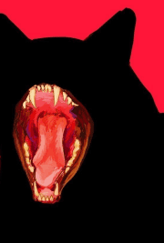
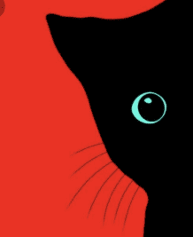
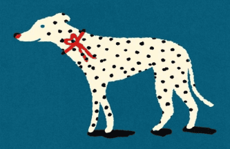
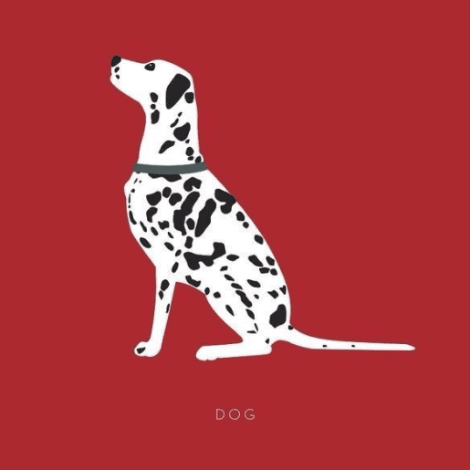
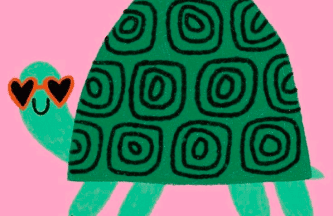
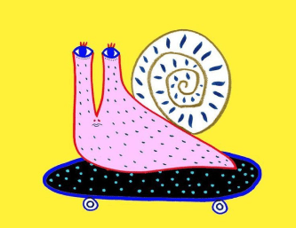
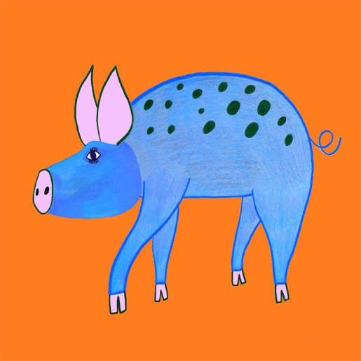

MY WORKS
My work is a synthesis of creativity and technology, where every detail is important. I strive to create designs that are not only visually impressive, but also have meaning, reflecting ideas and emotions.
Below there is a filter using which you can view works on different topics. Use it quickly and learn more about my creativity
SEE MORE
WHICH TYPE OF WORKS DO YOU WANT TO SEE?
-
CATS
-
DOGS
-
OTHER









